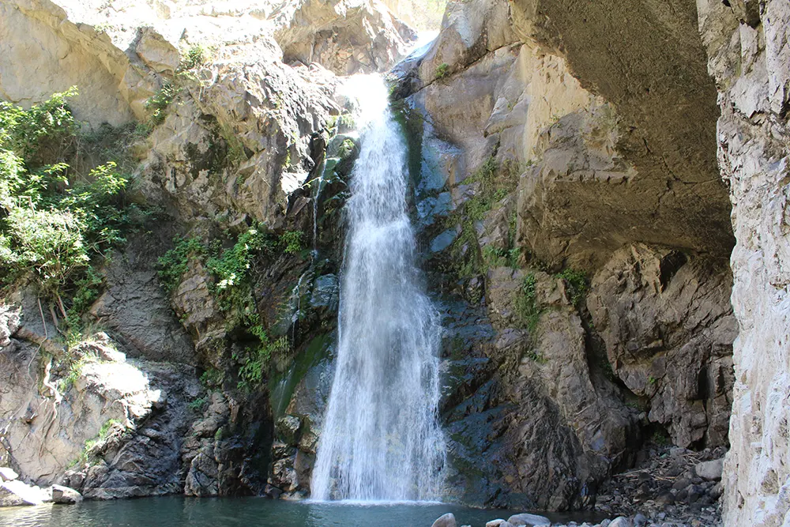
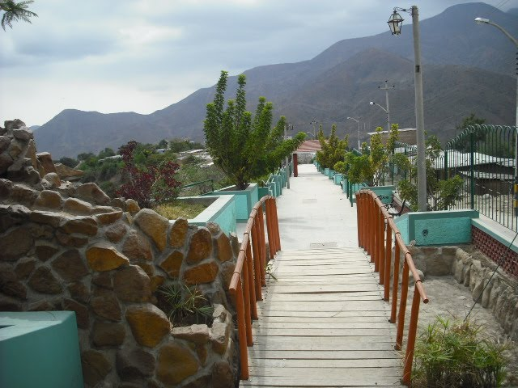
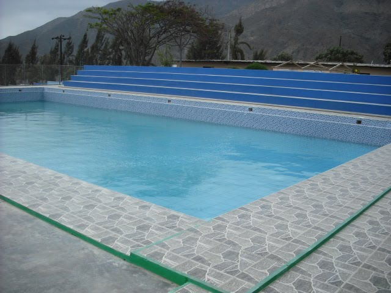

Lugares turísticos
Los lugares turísticos de Jimbe representan una importante riqueza natural, histórica y cultural del distrito de Cáceres del Perú, en Áncash. Entre ellos destacan el Palacio Irca, que conserva parte del legado arqueológico de nuestros antepasados; Caja Rumi, que forma parte de los atractivos de la zona; y la catarata de Chiuran, conocida por su impresionante caída de agua y su entorno natural. Estos lugares permiten conocer mejor la historia y la belleza de nuestra localidad, disfrutar de la naturaleza y realizar actividades al aire libre. Además, promover su visita contribuye al turismo local y genera oportunidades para los habitantes. Por ello, es importante protegerlos, mantenerlos limpios y difundir su valor para las futuras generaciones
Palacio Irca
El Palacio Irca es un sitio arqueológico ubicado en la parte alta del distrito de Cáceres del Perú, en la zona de Jimbe, provincia del Santa, región Áncash. Este lugar destaca por su valor histórico y cultural, pues está relacionado con las antiguas culturas que habitaron la zona durante la época prehispánica. Su existencia representa una parte importante del patrimonio de la localidad y permite valorar la historia de nuestros antepasados. Sin embargo, necesita mayor difusión, investigación y apoyo para su conservación, con el fin de proteger sus restos arqueológicos y promover el turismo cultural en Jimbe.
Caja Rumi
En las zonas altoandinas de la región Áncash, específicamente en el límite del distrito de Cáceres del Perú (provincia del Santa) con Pamparomás (provincia de Huaylas), se esconde un impresionante circuito de cajas de piedras, talladas con una precisión asombrosa por la mano del hombre andino, se estima, hace miles de años. Se trata del sitio arqueológico de Caja Rumi, situado a por lo menos unos 3,700 metros sobre el nivel del mar de altura. Caja Rumi es una montaña que al explorarla se pueden encontra ocho cajas de piedras perfectamente talladas. Alrededor la naturaleza, vegetación, clima frío; permiten un perfecto equilibrio entre el cielo y la tierra. Si bien el clima tiende a ser frío, el imponente paisaje que se ofrece al momento de escalar la montaña, vale la pena.

Catarata de Chiuran
La catarata de Chiuran, también conocida como El Chorro, se encuentra entre los caseríos de Canchas, Cutco y Colcap, en el distrito de Cáceres del Perú, provincia del Santa, Áncash. Tiene aproximadamente 50 metros de altura y está ubicada a 1757 m s. n. m. Para llegar, se realiza una caminata de unos 30 minutos desde el caserío de Cutco.
Sus aguas provienen del río Colcap, formado por diversas quebradas y puquiales de las zonas altas. En la parte inferior de la catarata existe una poza donde los visitantes suelen bañarse. El lugar destaca por su flora, como alisos, carrizos y molles, y por su fauna, que incluye zorros andinos y diversas aves.
La mejor época para visitarla es de mayo a diciembre, ya que entre enero y abril las lluvias aumentan considerablemente el caudal del agua. Es un lugar ideal para realizar caminatas, observar la naturaleza, nadar cuando las condiciones sean seguras y practicar actividades de aventura.
Galería de imágenes


Cuidemos nuestros atractivos naturales
Mantener limpios los espacios públicos, proteger la naturaleza y respetar las costumbres locales ayuda a conservar el patrimonio de Jimbe.
Jimbe - Cáceres del Perú - Santa - Áncash
Conoce, valora y cuida nuestras tradiciones.Todos los derechos reservados.